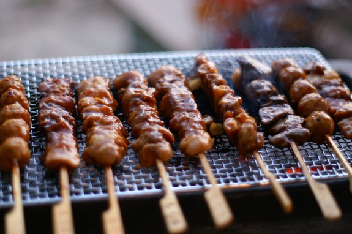

닭고기를 사용한 야키토리

사사미(ささみ)는 닭가슴살을 꼬치에 꿰어 구운 것이다. 들깻잎, 우메보시 (梅干し) 등을 추가해 넣고 구울 때도 있다.
테바사키(手羽先)는 닭의 날개살 중 윗부분을 꼬치에 꿰어 구운 것이다.
모모(もも)는 닭의 넓적다리를 꼬치에 꿰어 구운 것이다.
야키토리를 만드는 방법
타레(たれ)는 야키토리에는 일반적으로 간장과 미림, 설탕을 배합해서 만든 소스인 ‘타레’를 발라 먹는다.
쿠시(串, くし)는 일반적으로 야키토리에는 대나무 혹은 나무로 된 쿠시(꼬치)를 사용한다.
스미비(炭火, 숯불)는 강한 화력의 숯불을 이용한다.